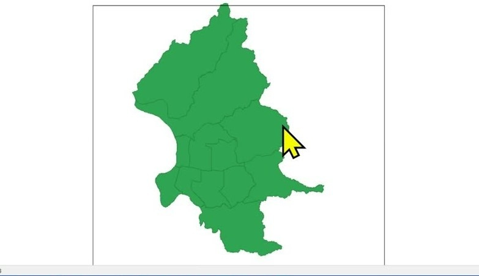
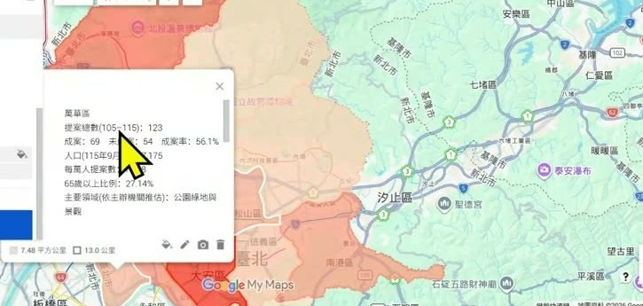

0. 課程資訊與教材
| 項目 | 內容 |
|---|---|
| 課程 | EP55 一張地圖看懂城市：AI × GIS 帶你做城市資料視覺化 |
| 課程日期 | 2026/10/10；簡報標示上午 06:30–07:30 |
| 本段錄影 | 51 分 49 秒 |
| 講師 | 本次教材未列姓名 |
| 兩個案例 | 房價實價登錄 × 臺北市參與式預算 |
| 要先準備 | 瀏覽器、可使用的 AI 工具；若要跟做則需區界圖資與對應的資料表 |
這份筆記如何使用教材
| 依據 | 在本頁的用途 |
|---|---|
| 課堂錄影 | 依實際展示順序整理操作、思路與未完成之處；章節與圖說有時間戳。 |
| 32 頁課程簡報 | 補上資料口徑、篩選規則、統計解讀與驗收條件；補充處另標簡報頁碼。 |
帶走一份正式手冊
1. 一張圖看懂這堂
這堂課用兩種城市資料示範同一條路：先釐清想問的問題，再把資料與位置接起來，最後才是 AI 協作和互動地圖。
2. 先分清楚你在看一筆資料，還是一個行政區
老師先打開實價登錄網站，讓同一組資料在表格與地圖之間切換。重點是理解資料、圖資與呈現介面的關係。
一張地圖至少要有三層意思
| 層次 | 這堂課的例子 | 實作時要問 |
|---|---|---|
| 屬性資料 | 房價、案名、需求類型或提案件數 | 每個數字與欄位的定義是什麼？ |
| 位置與圖資 | 一個點、一段線、一個行政區的面 | 地址要定位？還是直接連到行政區界？ |
| 脈絡與介面 | 時間範圍、來源、圖例、互動資訊 | 使用者是否知道資料從哪裡來、能解讀到哪裡？ |
一般表格常存成 XLS 或 CSV；課堂接著介紹 SHP 圖資。表格有區名，不等於已經有行政區形狀。先備妥區界與連接欄位，才能把統計值放到正確位置。
錄影 06:00–08:00 用地址作為例子：交易資料的地址要能轉成可定位的位置，才能和地圖連結；若分析的是行政區統計，則改用能與區界對應的區名或代碼。先弄清楚資料在哪一個尺度上連接，才不會把個案和區域數字混在一起。
用房價案例看見「先清理，才比較」
| 簡報的教學資料口徑 | 紀錄 |
|---|---|
| 發布快照 | 臺北市實價周報，2026/10/07 |
| 原始資料 | 1,941 筆：買賣 870、租賃 963、預售屋 108 |
| 篩選流程 | 先選買賣 870 筆 → 住宅與單價條件初篩 332 筆 → 備註排除 45 筆 → 教學子集 287 筆 |
| 計算與範圍 | 各區住宅單價中位數；單位為萬元／坪；成交日為 2026/01/06–09/07 |
| 必須保留 | 用途、車位與交易備註；增建與外推另留旗標 |
簡報把「價格較高」「紀錄較多」「空間群聚」分開處理。中位數高，只能說本次子集的單價指標較高；交易筆數多，說的是符合條件的紀錄較集中；要主張群聚，還得定義鄰居並做統計檢定。
3. 先把區界打開，再談 AI 能幫你做哪一段
這一段切換桌面 GIS、GeoDa 與 GeoDa.AI 相關頁面。先讓圖資能被讀取，再看分析工具或 AI 的介面，是比背工具名稱更重要的順序。

把三件不同的事拆開
| 工作 | 課堂中的角色 | 驗證方式 |
|---|---|---|
| 資料整理 | AI 協助理解欄位、清理規則與文字分類 | 回到原始資料檢查欄位、保留／排除筆數 |
| GIS 分析 | 讀入區界、接上資料、選擇空間分析方法 | 核對連接鍵、座標系統、鄰居定義與計算結果 |
| WebGIS 開發 | 讓地圖有可拖曳、查詢、篩選與匯出的介面 | 逐項測試操作與資料是否同步 |
課堂展示桌面工具的分析選單，也開啟 GeoDa.AI 與網頁介面。簡報第 7–10 頁進一步區分：QGIS 的 AI 能力可能來自第三方外掛；GeoDa 桌面與 GeoDa.AI 延伸專案也各有角色。看到工具名稱相近，不代表每套環境都已具備相同功能。
「熱區」不能只靠顏色判斷
- 先定義鄰居：共邊、共邊或共角、距離與最近地點，會形成不同的比較關係。
- 整體與局部分開：Moran’s I 用於整體空間關聯的判讀；LISA 關注局部群聚與空間離群。
- 四種相對關係：高高、低低、高低、低高，還需要配合顯著性等證據；圖的象限或色深本身不是完整結論。
- 觀察單位只有 12 區：改變彙總單位、鄰居規則或資料範圍，分析情境也會改變。
4. 把「幫我做地圖」變成一份可以驗收的需求
老師接著將 WebGIS 的畫面功能整理成需求，再交給 AI 分步處理。地圖能顯示只是起點，真正的工作在互動、資訊與資料規則。
按使用者要完成的動作列功能
| 需要什麼 | 具體描述 |
|---|---|
| 看得懂 | 圖例、摘要、明細表；字體大小與色彩之外的文字說明 |
| 找得到 | 區名搜尋、縮放到行政區、回到全圖 |
| 查得準 | 期間、類型、行政區篩選；點擊讀到原始紀錄 |
| 比較有意義 | 兩邊使用一致指標、單位與色階；切換圖層保留分析口徑 |
| 能帶走 | 下載目前篩選後的資料；匯出時保留欄位與資料範圍 |
把需求寫成測試，不只寫成願望
- 先指定資料來源、分析範圍與要使用的區界，要求不要自行補造交易或提案。
- 選一個行政區，檢查地圖、表格與統計是否同步更新。
- 再改期間或類型，檢查下載內容是否使用同一組篩選。
- 測試沒有符合資料的條件，確認它不會被顯示成零筆有效觀測或一般缺值。
- 按下重設，確認回到全部資料與原始顯示；單純平移地圖不應默默改變統計範圍。
工具介面可以由 AI 協助產生，資料規則仍要由使用者說清楚。如果你只說「做一張漂亮的地圖」，AI 無法知道你要比較的是單價、交易量、提案數，還是特定需求類型。
5. 把公開提案當成資料，先問它涵蓋誰與哪段時間
第二個案例改用臺北市參與式預算。老師開啟提案查詢與歷年成果，用各區的提案內容理解城市公共問題。
同樣叫「提案數」，可能是不同資料集
| 必須拆開的欄位 | 為什麼 |
|---|---|
| 年度 | 會議或執行年度不同，資料涵蓋的時間就不同。 |
| 提案階段 | 公開清單、審議、投票或執行結果，代表不同階段。 |
| 處理狀態 | 提案出現不等於已通過、已執行或已解決。 |
| 行政區 | 按辦理區公所歸類，與提案實際受益範圍不必然相同。 |
| 查詢範圍 | 只看一頁清單與抓取歷年資料，數量不能直接相比。 |
簡報第 16、20–21 頁使用的是2026 年第一階段審議清單、查詢第 1 頁，共 71 個可見案名，按辦理區公所整理；目前完成的是筆數圖與三案分類示例。錄影後段則另外展示跨年度收集的 AI 成果。兩者的範圍不同，不能把它們合併成一個總數。
需求分類要讀原文，不能只猜標題
簡報第 17 頁用松山區「公車好好搭，長輩樂悠活」示範：案名看起來是公車服務，公開內容還涉及長者供餐與敬老卡。只看標題容易少掉重要需求。
- 每案先選一個主要需求類別，再保留可以複選的次要標籤。
- 把受益對象與需求類型分成不同欄位，避免把「長者」直接當成需求。
- 為每個判斷保存原文依據、來源位置與人工確認欄。
- 資訊不足就標記待確認；不要由 AI 自行補出未提及的需求或位置。
6. 先完成一張可以點、可以核對的地圖
這一段在 Google 我的地圖與資料檔之間來回，重點是把資料真的放上地圖，並檢查點擊後能看到什麼。

簡報提供的最小操作路徑
- 建立 Google My Maps 地圖，匯入一份包含臺北市 12 區幾何與統計的 CSV。
- 位置欄位選 WKT，名稱欄位選 district_name；先確認 12 區都正確出現。
- 依 proposal_count 等實際數值欄位設定色階，不只逐區隨機換顏色。
- 點擊不同區，核對區名、筆數與原始資料；補上來源、時間與資料範圍。
- 最後才檢查分享設定與輸出。
不要把三種地圖看成同一件事
| 看到的畫面 | 可以說什麼 | 仍要確認 |
|---|---|---|
| 行政區輪廓 | 區界圖資可以呈現 | 區名、位置與座標是否正確 |
| 每區不同顏色 | 類別或區域被區分 | 色彩有沒有連到實際指標 |
| 依數值深淺著色 | 指定指標有可視化差異 | 圖例、單位、缺值與範圍有沒有交代 |
My Maps 的作用是讓成果容易查看、點擊和分享。若要判斷空間群聚或建立更複雜的查詢介面，仍需回到合適的分析工具與實際資料。
7. AI 可以接力處理，驗收不能一起交出去
後段展示持續執行的 AI 協作：資料收集、空間圖資、資料嫁接與輸出可以拆成任務。成果能開啟，才開始有下一輪檢查的基礎。
拆任務時，也拆出每一步的交付物
| 分工 | 要留下的成果 | 下一步怎麼查 |
|---|---|---|
| 收集資料 | 資料表、來源、年份與抓取範圍 | 抽查原始網頁與筆數 |
| 處理圖資 | 區界、座標系統、區名與代碼 | 能否在 GIS 開啟、區域是否完整 |
| 資料嫁接 | 每區對應的統計與未配對清單 | 重複、缺漏、名稱不一致是否處理 |
| 做地圖與輸出 | 可開啟的地圖與資料檔 | 點擊、篩選、匯出與欄位內容是否一致 |
老師展示 AI 協作收集歷年提案、整理分類與產生地圖的過程。畫面與口述中提到的資料筆數、主要需求類別，屬於當次 AI 產出的說明；本頁沒有取得並逐筆重算那份完整資料，因此不把它當成臺北市整體民意的驗證結論。
誠實保留：最後一個底圖沒有成功載入
錄影 48:00–49:30 回到士林區實價登錄 WebGIS，老師指出線上的底圖沒有成功匯入。雖然已有資料與框選範圍，畫面仍無法完整呈現，於是再請 AI 抓取士林區底圖。這段錄影沒有展示修復後的成功畫面。因此它是一次生成後還要除錯的示範，不是完整驗收通過的成品。
延伸到自己的資料，也要選對公開尺度
收尾以學校的學生來源分佈為例：只需要知道學區、學校或縣市時，就不應把學生住在哪一棟大樓放上地圖。先選擇能回答問題的彙總尺度，再決定畫面該顯示多少資訊。［50:50–51:35］
8. 這堂課真正在教的事
一、地圖是一種提問方式
先決定你想看房價、交易量、提案數還是需求類型，才知道需要什麼資料與分析單位。換一份資料，同一組 12 區區界就會回答另一個問題。
二、AI 能加快做法，不能替你決定證據範圍
清理規則、分類與介面都能請 AI 協助，但原始欄位、數字計算、排除理由和資料範圍仍要核對。
三、互動地圖的品質在細節的一致
區名、圖例、表格、統計與下載是否對得上，比畫面看起來豐富更能決定這張圖可不可以使用。
四、說一個發現，也說一項限制
指定子集的中位數不代表全年市場；公開提案不代表每位居民；深色區塊不自動等於顯著群聚。把限制說清楚，地圖才不會帶人走到資料之外。
9. 老師金句
10. 資料來源與整理說明
| 項目 | 說明 |
|---|---|
| 來源 | EP55 課堂錄影（2026/10/10；51:49）與同課程 32 頁簡報。 |
| 整理方式 | 全程本機處理；從 53 個畫面候選人工保留 20 張關鍵畫面；正式頁精選 6 張。逐字稿 477 段供對照，再按主題改寫為課堂筆記。 |
| 時間戳 | ［mm:ss］對應錄影播放器時間。簡報補充另標頁碼，不冒充已在錄影示範的步驟。 |
| 整理 | 竹貞（Tarshar 的逐幀筆記專員） |
引用前，先分清楚三層內容
- 錄影實作：依畫面與口述整理；公開截圖已裁掉與內容無關的介面與身分資訊。
- 簡報補充：資料筆數、篩選規則與完整流程按頁碼標註；不把簡報規劃等同課堂已做完。
- 整理推展：對照表、複習步驟、檢核與總結是依教材改寫，不是老師逐字原話。
- 機器逐字稿可能聽錯人名、工具名與專有名詞。正式頁以畫面和簡報可佐證的用語為準；引文只取能核對的短句。
- 本頁未重新取得並重算全部原始交易與提案資料；不構成即時市場、全體民意或統計顯著性的研究結論。
- 教材與課堂畫面版權屬原作者。若原作者或課程方希望撤下，請透過聯絡頁告知，將即刻移除。